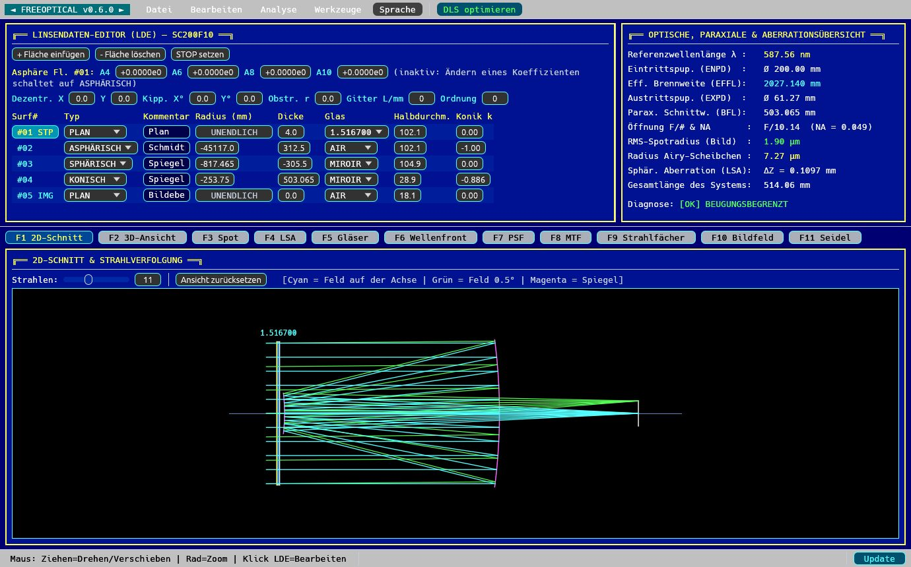
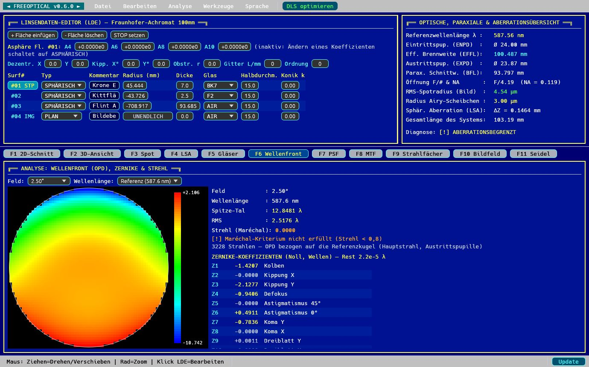
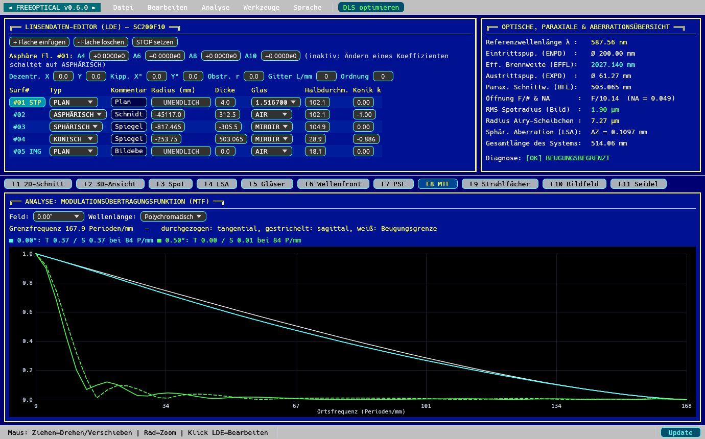
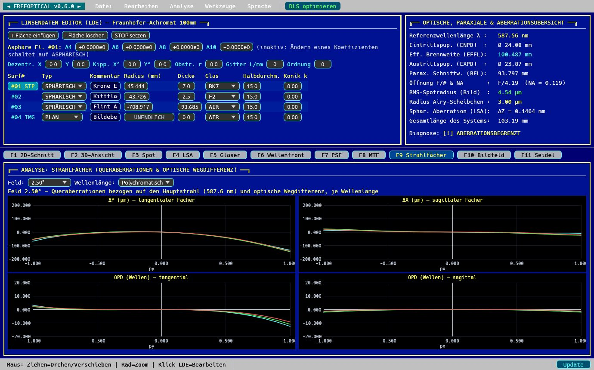

Funktionen
Exakte Strahlverfolgung
Sequentielle 3D-Strahlverfolgung: Sphären, Kegelschnitte, gerade Asphären, Spiegel, gekippte und dezentrierte Flächen (gefaltete Systeme), zentrale Obstruktionen, Beugungsgitter.
Wellenoptik
Optische Wegdifferenz (OPD), Wellenfrontkarte, 37 Zernike-Polynome, Strehl-Verhältnis, Beugungs-PSF und tangentiale und sagittale MTF.
Aberrationen
Spotdiagramm, Strahlfächer, longitudinale sphärische Aberration, Bildfeldwölbung, Verzeichnung und Seidel-Koeffizienten je Fläche.
Echte Gläser
Sellmeier-Formeln, eingebaute Schott-Gläser, Quarzglas und Flussspat; Import von Zemax-Katalogen .agf (Schott, Ohara, CDGM…).
Optimierung
Gedämpfte kleinste Quadrate (DLS) über alle Felder und Farben: Radien, Dicken, Kegelschnitte, Asphären, Brennweite und Nebenbedingungen.
Offen und skriptfähig
Grafische Oberfläche, Terminal-Oberfläche und MCP-Server zur Steuerung durch einen KI-Agenten. Import von TDESIGN-, LENSDES- und RAYTRACE-Dateien (Rutten und van Venrooij).
Bildschirmfotos








Installation
Debian, Ubuntu und Derivate (amd64): das .deb-Paket der neuesten Version herunterladen, dann:
sudo apt install ./freeoptical_0.6.0_amd64.deb
Spätere Versionen werden über die Schaltfläche Update des Programms installiert. Aus den Quellen: cargo build --release.
Für wen?
Amateurastronomen, die ihre Spiegel schleifen oder Instrumente entwerfen, Studierende und Lehrende der Optik, Ingenieure auf der Suche nach einer freien Alternative zu kommerzieller Optikdesign-Software wie Zemax OpticStudio, Code V oder OSLO.
Sprachen
Oberfläche auf Deutsch, Englisch und Französisch (Menü Sprache).